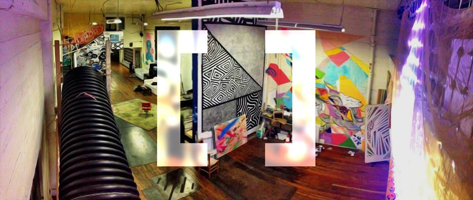
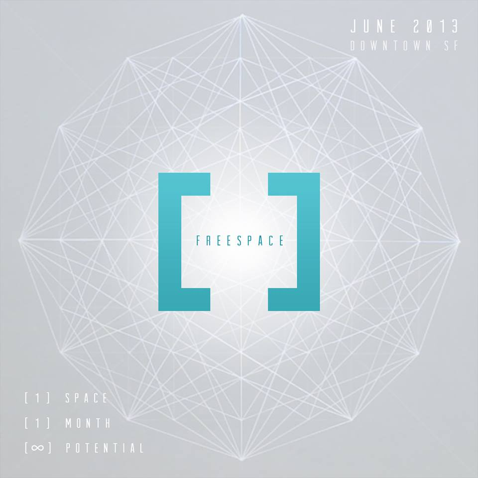
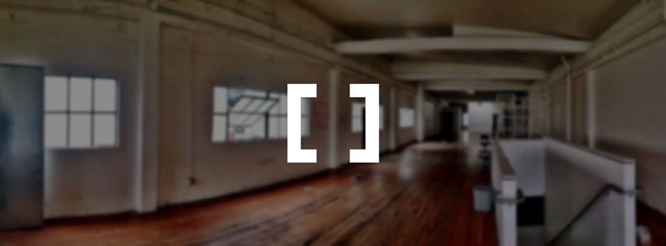
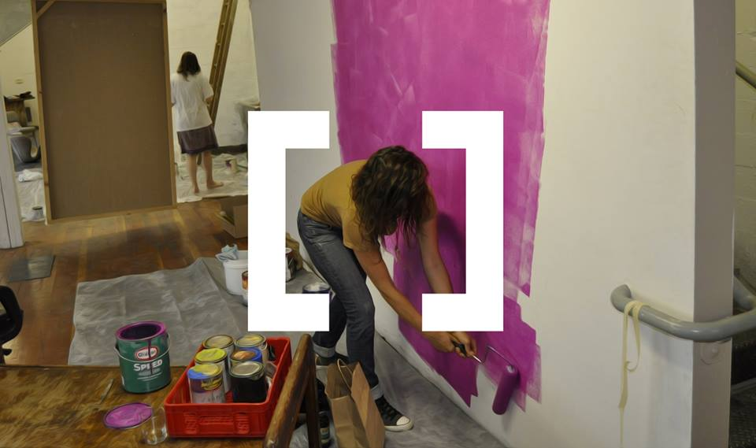
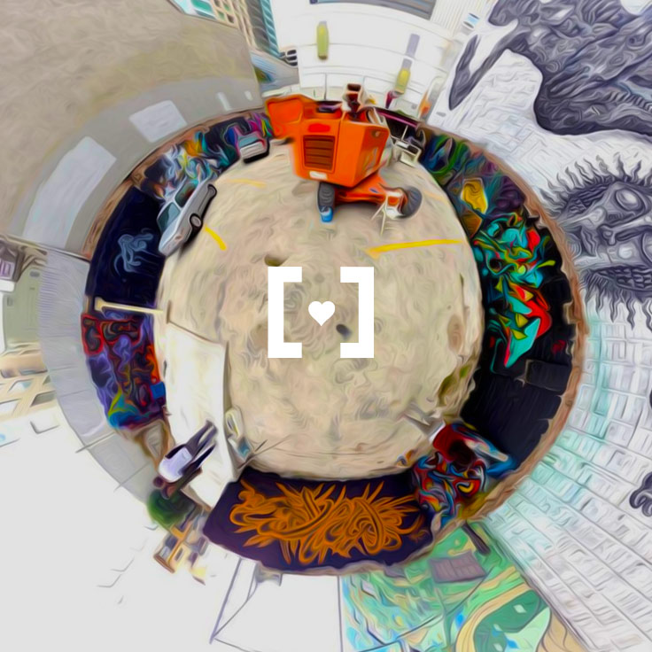

[freespace] ATX fosters creativity, community, and civic innovation through the gift of free space. We connect those with unused or underutilized space with the local community for civic innovation.





